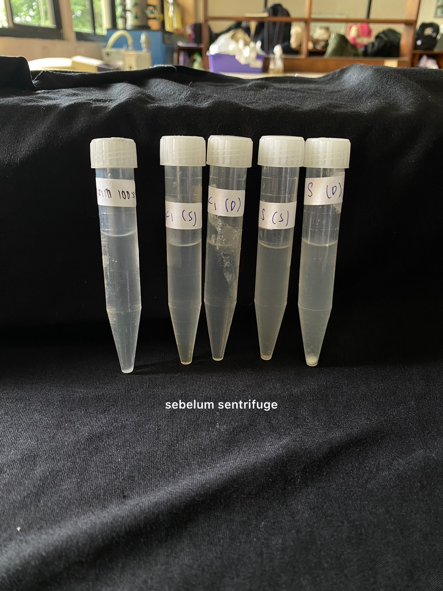
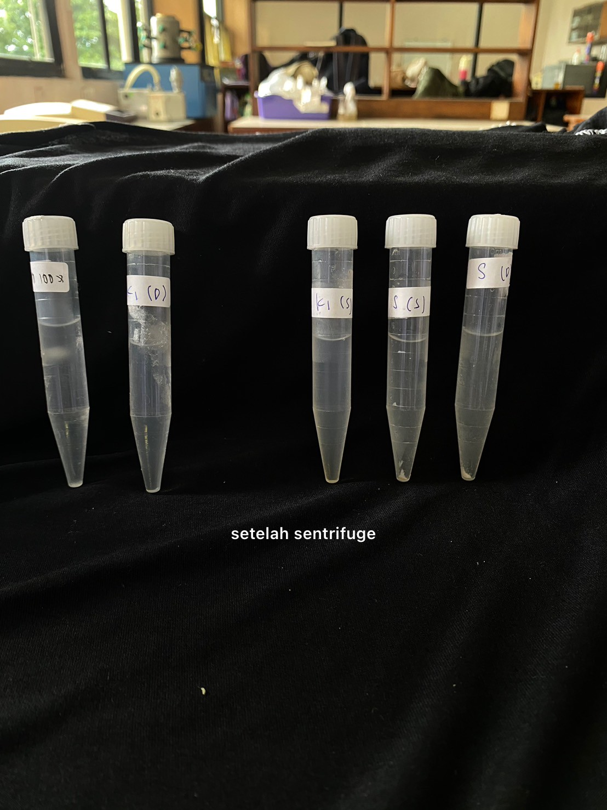
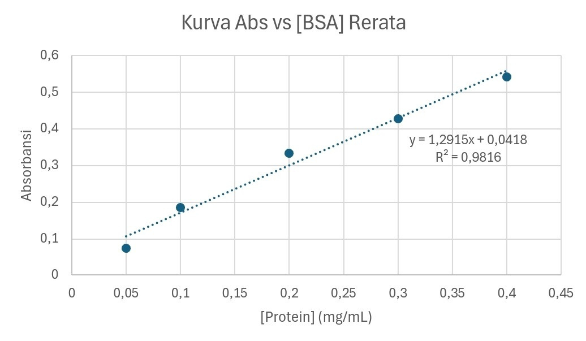
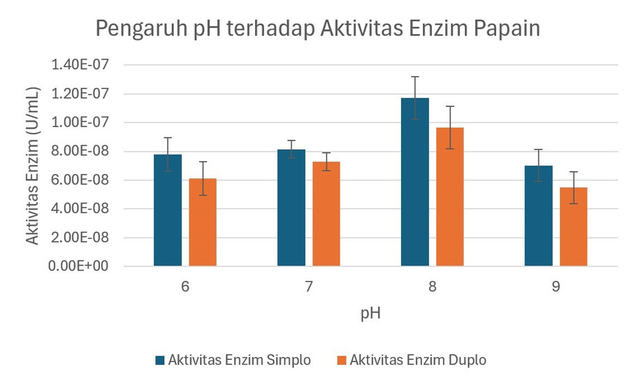
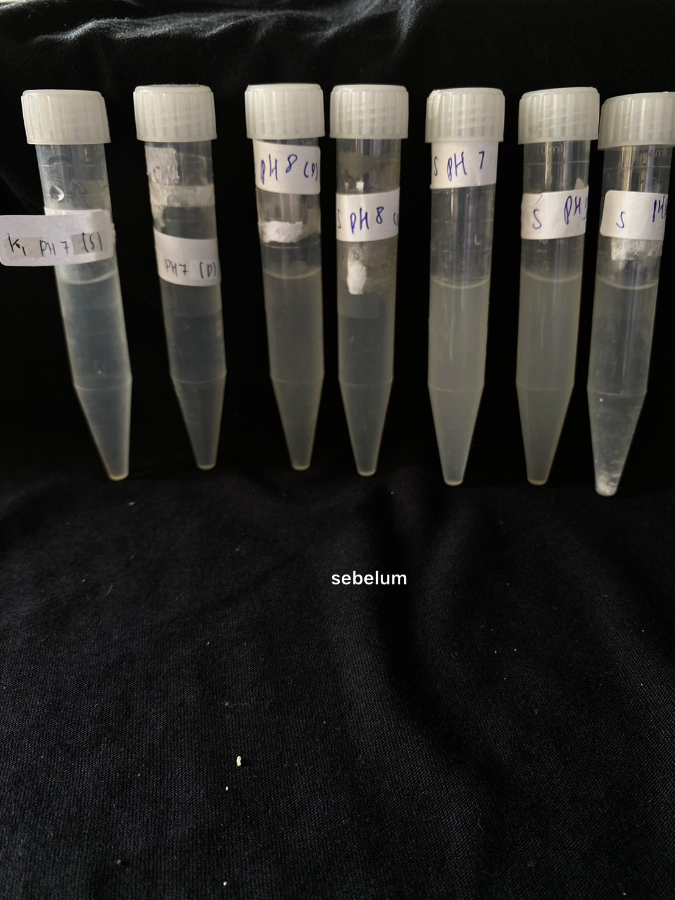
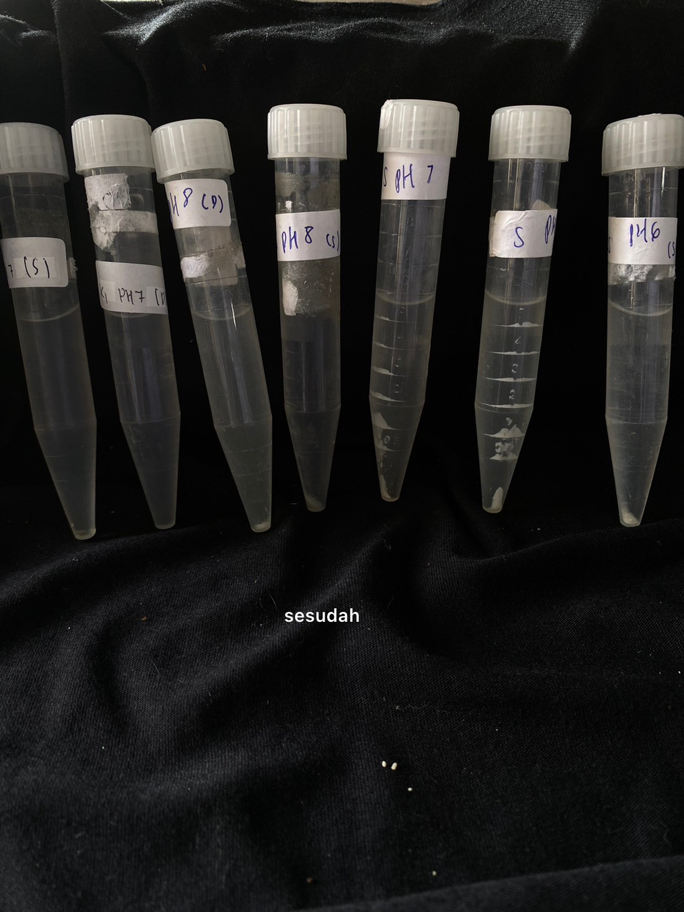
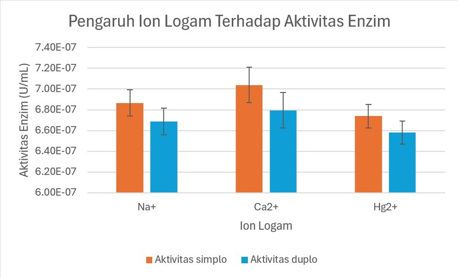
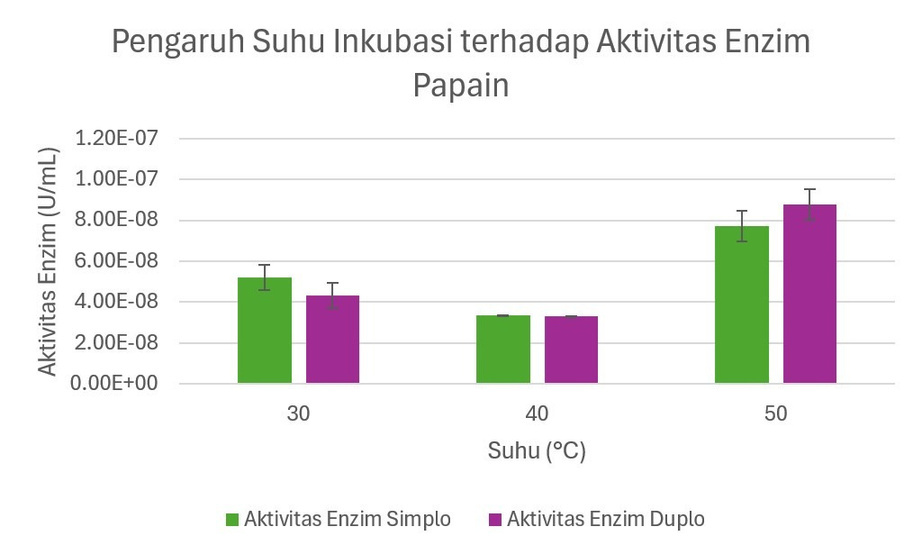

Biochemistry Lab • Group 7 (Kelompok 7)
Isolated · Quantified · Characterized
Project Overview: Conducted end-to-end isolation and characterization of the papain enzyme (EC 3.4.22.2), a cysteine protease, extracted from local unripe papaya (Carica papaya L.) latex. The project evaluated optimal pH, temperature, and metal ion influences on enzyme activity to determine process viability for biochemical and industrial applications.
Harvest raw papaya, score skin to collect latex, and store at 4 °C.
Saturate crude latex in 0.1 M Tris-HCl buffer (pH 7).
Stir homogenously for 30 minutes at a cooled 4 °C.
Centrifuge at 13,000 rpm for 15 minutes to separate solids.
Filter and store the supernatant as crude enzyme extract.

Fig. 1a — Uncentrifuged Papaya Latex Solution

Fig. 1b — Crude Supernatant After 13,000 rpm Centrifugation

Fig. 2 — BSA Calibration Curve
Protein concentration was determined via the Lowry assay, utilizing Bovine Serum Albumin (BSA) standards measured at 700 nm wavelength.
The calibration curve exhibits high linearity (R2 = 0.9816) across the BSA range (0.05 to 0.4 mg/mL).
Papain activity was determined through UV-Vis spectrophotometry at 280 nm wavelength, measuring the rate of casein 1% substrate hydrolysis at 37 °C.
| Trial | [Protein] (mg/mL) | Protein Mass (mg) | Enzyme Activity (U/mL) | Total Activity (U) | Specific Activity (U/mg) |
|---|---|---|---|---|---|
| Simplo | 7.42888 | 742.888 | 3.02013 × 10-8 | 3.02013 × 10-6 | 4.06539 × 10-9 |
| Duplo | 6.32078 | 632.078 | 2.23490 × 10-8 | 2.23490 × 10-6 | 3.53579 × 10-9 |
| Rerata (Average) | 6.86798 | 686.798 | 4.37919 × 10-9 | 4.37919 × 10-7 | 6.37625 × 10-10 |
*Note: The standard deviation of the measured enzyme activity is 5.55245 × 10-9 U/mL.

Fig. 3 — Influence of pH on Papain Activity
Papain activity is highly dependent on pH, displaying an optimum at pH 8. The catalytic mechanism of papain relies on the thiolate-imidazolium ion pair (Cys25-S- / His159-ImH+) at the active site. At pH 8, the electrostatic environment promotes the formation of this nucleophilic ion pair, enabling efficient attack on the peptide carbonyl carbon. Lower pH (acidic) protonates Cys25, while higher pH (strongly basic) deprotonates His159, both disrupting the active site conformation and decreasing activity.

Before Incubation
After Incubation
Fig. 4 — Influence of Temperature on Papain Activity
The activity of papain increases with temperature, reaching an optimum at 50 °C. Cysteine proteases like papain exhibit high thermal stability compared to other enzymes, which is attributed to the presence of three intramolecular disulfide bonds (Cys22–Cys63, Cys56–Cys95, and Cys153–Cys200) that stabilize its tertiary structure against heat denaturation up to 50 °C. Beyond this temperature, thermal denaturation begins to disrupt the tertiary structure, causing loss of catalytic function.

Fig. 5 — Influence of Metal Ions on Papain Activity
Metal ions act as modulators of papain activity:
| Reagent / Material Name | Required Amount | Application |
|---|---|---|
| Padatan Tris Base | 18.171 gram | Preparation of 1500 mL Tris-HCl 0.1 M buffer stock |
| HCL 6 M / NaOH 6 M | 300 mL each | pH adjustment (pH 6, 7, 8, 9) for characterization buffers |
| Padatan CuSO₄ • 5H₂O | 0.1 gram | Lowry Reagent formulation (Stock B) |
| Padatan NaOH | 2 gram | Lowry Reagent formulation (Stock A) |
| Padatan Na₂CO₃ | 10 gram | Lowry Reagent formulation (Stock A) |
| Padatan Na₂K Tartrat | 0.2 gram | Lowry Reagent formulation (Stock C) |
| Bubuk Kasein (Sodium Caseinate) | 5 gram | Enzyme substrate (1% solution) for activity assays |
| BSA (Bovine Serum Albumin) | 100 mg | BSA standard solutions (0.05, 0.1, 0.2, 0.3, 0.4 mg/mL) |
| Padatan CaCl2 • 2H2O | 36.7525 mg | Preparation of 25 mL Ca2+ activator solution (0.01 M) |
| Padatan NaCl | 14.61 mg | Preparation of 25 mL Na+ salt solution (0.01 M) |
| Padatan HgCl2 | 67.875 mg | Preparation of 25 mL Hg2+ inhibitor solution (0.01 M) |
| Reagen Folin-Ciocalteu 1N | 10 mL | Protein color reagent for Lowry quantification |
All laboratory workflows, qualitative test results, spectrophotometer printouts, and data balances are fully documented. Scan the QR code or visit the project archive to access the full experimental log, raw dataset spreadsheet, and original project proposal.